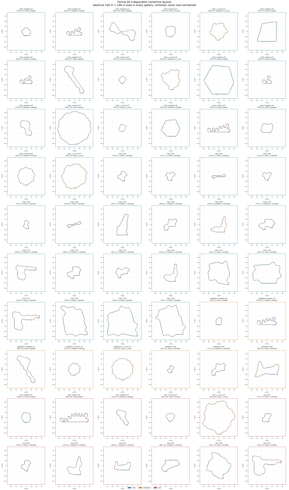

40 train / 8 validation / 12 test. 28/30 composites below .65 repetition. Physical drivability unassessed.
Master manifest · Frozen plan · Statistics · Review flags · Integrity report
overview · composites · specialist straight · specialist hairpin · specialist sweeper · specialist chicane · specialist s curve · split train · split validation · split test · geometric distributions · maneuver exposure · repetition active curvature · similarity matrix · split comparisons · curvature examples
